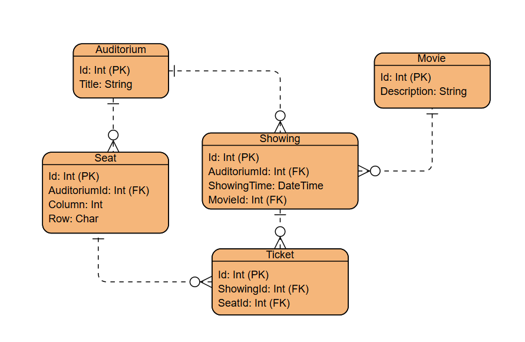
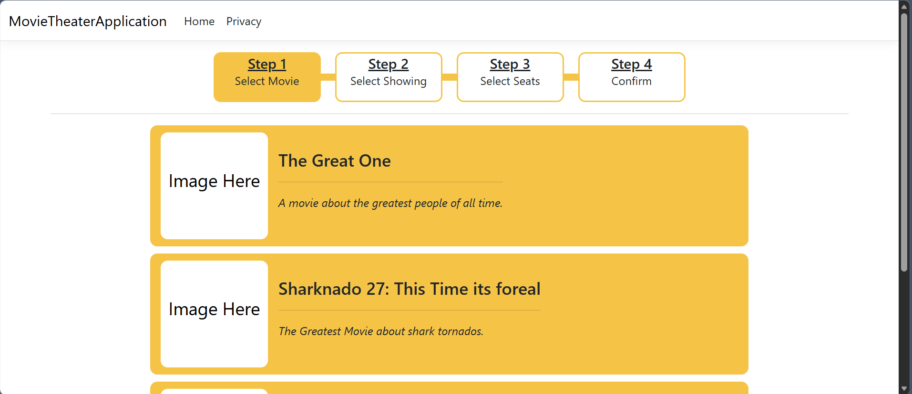
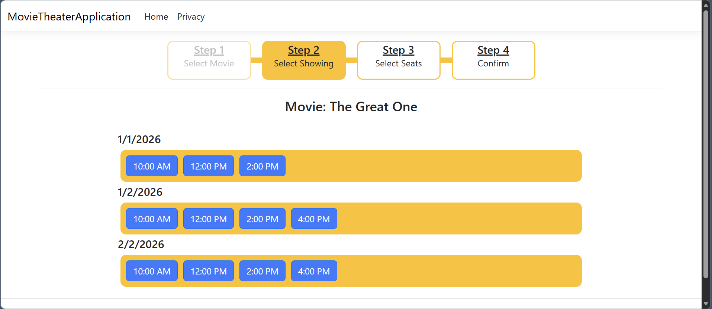
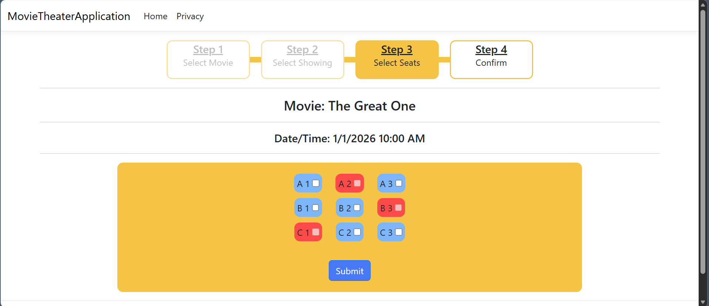
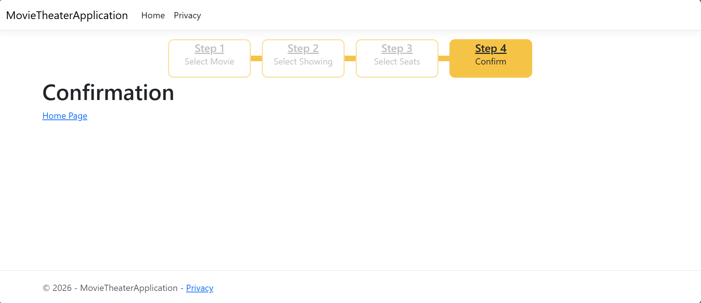

A website to create movie tickets. User selects a movie, showing, and a seat. After that a ticket will be created and saved in the database.
Get a better understanding on how seat selection works at a movie theater both in the frontend and backend. Also incorporate some good coding practices (repository/service pattern and testing).
ASP.NET Core MVC, Microsoft SQL Server, Entity Framework Core.
Whenever I go to the movie theater and see the seat selection monitor I wonder how does it work? Specifically, how is seat data stored and displayed. These questions are how this project came into being. My focus wasn’t to make a full movie theater app but just enough to make a ticket for seat selection. The basic flow of the website is this: Users select a movie, a showing, and then a seat. I also tried to apply some good software development practices that I don’t normally do. The bulk of this blog will be on how seat selection was done and things I learned/tried in the process.

Database ER Diagram
Something to note is that I did run into an error as a result of SQL Server not allowing multiple cascade deletion paths to the same table. Cascade deletion is a database setting that when an entity gets deleted, it will automatically delete any entities that depend on it. I had generated the database based on models using Entity Framework tools, which will by default add cascade deletion to tables that depend on each other. So in my schema, a Ticket depended on both a Showing and a Seat, and they both depend on an Auditorium, which meant that this is where the multiple cascade deletion path was. The solution was to disable cascade deletion on ticket to Seat/Showing (can be one or both). This can be done in the DbContext with the following in the OnModelCreating:
modelBuilder.Entity<Ticket>()
.HasOne(t => t.Seat)
.WithMany(s => s.Tickets)
.HasForeignKey(t => t.SeatId)
.OnDelete(DeleteBehavior.Restrict);
Note that an alternative solution could also be to use a different database since this is a Sql Server specific related issue.
When it came to storing/displaying seat data my initial though was an array. There were some problems with that in that you can't really store an array that well in a database and the rows and columns would be limited by hard set values in the frontend when displayed. After some research I decided that on using a Seat table that will have a "row" and "column" field. I also had to indicate take seats when selecting. This was done by getting seatIds from the tickets of the current showing and then adding a "IsSelected" fields for each seat in a ViewModel. This way I could conditionally disabled button when displaying them. Here are the steps taken to do this:
// Example Seat Formating in Controller
var seatIdsForTickets = await _service.GetSeatIdsOfTicketsByShowingId(ShowingId);
var formatedSeats = seats.Select(i => new SeatListViewModel {
SeatId = i.Id,
Column = i.Column,
Row = i.Row,
IsSelected = seatIdsForTickets.Contains(i.Id)
});
var groupedFormatedSeats = formatedSeats.GroupBy(i => i.Row);
SeatSelectionViewModel data = new SeatSelectionViewModel
{
// format data
};
return View(data);
// Example section of loop in View, SeatSelection.cshtml
@foreach (var group in Model.GroupedSeats)
{
<div class="row">
@foreach (var seat in group)
{
<div class="col-sm-4">
<div class="@(seat.IsSelected ? "seatStatusTaken" : "seatStatusNormal")">
<label for="seat@(group.Key)@(seat.Column)">@group.Key @seat.Column</label>
<input id="seat@(group.Key)@(seat.Column)"
class="seatElement"
name="SeatIds"
type="checkbox"
value="@seat.SeatId"
disabled="@(seat.IsSelected)" />
</div>
</div>
}
</div>
}
Repository and Service class patterns are something new I tried to incorporate into my project. The idea behind a Repository is that it is the data access layer, the part that has access to the database. The idea behind the Service class is that it represents the business logic or rules/process that define the system. This section separation make the code more maintainable and allows for easier testing. Ultimately, I had one Repository class (MovieTheaterRepository) and one Service class (MovieTheaterService) to contain all functionality. Normally It's better practice to have different repositories and services for different models but I tried to keep things a bit simplified. I also have an interface for both of the these classes and use dependency injection when using them. Example of adding them to DI container in Program.cs:
builder.Services.AddScoped<IMovieTheaterService, MovieTheaterService>();
In large projects testing is pretty essential so I incorporated it and tried to learn a bit on best practices. The tests I wrote were mostly on Repository/Service functions. I will mainly go over the setup and not the specifics. The actual code was very repetitive and not too noteworthy.
dotnet new xunit -o MovieTheaterApplicationTests
dotnet sln add MovieTheaterApplicationTests // in root
dotnet add MovieTheaterApplicationTests/MovieTheaterApplicationTests.csproj
reference MovieTheaterApplication/MovieTheaterApplication.csproj
[Fact] attribute on function, Returns void or task, has Assert Function
dotnet test
Some conventions to mention are naming and AAA. Test function were named based on the format of "FunctionName_BaseState_Result". And the AAA pattern was used which stands for Arrange, Act, and Assert. Arrange involves setting up variables and conditions. Act is running the functionality that is being tested. Assert is assessing the results for correctness.
When it came to testing the Repository/Service Classes, dependencies to the database where something that needed to dealt with. Ultimately, there were two options I used in different parts. The first was using the Moq library where a fake version of the dependency is made with a simple input/output setup for functions. Moq is the more lightweight option. The second was using an in-memory database instance where an instance of the dbContext is created but instead of connecting to the normal database, an inmemory database is used. This solution is heavier but since it incorporates the dbContext, Entity Framework functionality is accessible.
// using dotnet cli
dotnet add package Moq
// In Test Function
var repo = new Mock<IMovieTheaterRepository>();
repo.Setup(r => r.ExRepoFunction(1)).ReturnsAsync(1);
var service = new MovieTheaterService(repo.Object);
// Where ExServiceFunction uses ExRepoFunction
Var result = service.ExServiceFunction();
// using dotnet cli
dotnet add package Microsoft.EntityFrameworkCore.InMemory
// In Test function
var options = new DbContextOptionsBuilder<ExampleDbContext>()
.UseInMemoryDatabase(Guid.NewGuid().ToString())
.Options;
var context = new ExampleDbContext(options);
var repo = new ExampleRepository(context);
var service = new ExampleService(repo);
var result = service.ExServiceFunction();
A noteworthy issue I ran into is that when a mock Repository(with DbContext) is passed into a Service instance, there are certain functions that are extend as result of going from DbSet to IQueriable/Other that won't exits in the mock version. In my case, I had a repository function return an IQueriable that was called by a Service class function. The Service function would then do some filtering and use "ToListAsync" at the end. "ToListAsync" is not a function of IQueriable, so in the mock version where just an IQueriable is returned, the result would be an error. I needed to use an in-memory database in order to have Entity Framework specific functionality incorporated.




My main takeaways are that planning ahead really makes building core functionality a lot faster. I spent a bit of time trying to plan out how to organize the database with seat selection in mind and from there things moved quickly. My use of technology I already know might have also helped. More time coding and less time researching. Something I didn’t expect were a few of the non-trivial errors I ran into. Things like the "multi cascade delete to single table in SQL Server" issue and testing object with database dependencies. These issue required a bit of research to understand. Another things I realized is that good coding practices and testing can be a bit of a pain to setup. I incorporated them due to their importance, especially in larger projects, but it did take some time and felt like it didn’t add anything functional to my project. That said, I will continue to use them to improve my familiar with them in future projects.
Back to Projects